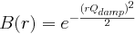
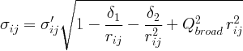

| [Top] | [Contents] | [Index] | [ ? ] |
PDFgui was developed as part of the Distributed Analysis of Neutron Scattering Data (DANSE) project which is funded by NSF under DMR-0520547. The PDFfit2 development was funded by NSF under contract DMR-0304391. The program is part of the DiffPy and DANSE open-source projects at Columbia University and is available subject to the conditions and terms laid out below. Several of the examples in the tutorial part were made possible and benefited from samples synthesized by J. F. Mitchell, and from data collected and processed by M. Schmidt, P. G. Radaelli, and X. Qiu. If you use this program to do productive scientific research that leads to publication, we ask that you acknowledge use of the program by citing the following paper in your publication:
Copyright © 2008, 2009, Board of Trustees of Columbia University in the city of New York, all rights reserved.
Copyright © 2006, 2007, Board of Trustees of Michigan State University, all rights reserved.
For more information please visit http://www.diffpy.org or contact Prof. Simon Billinge at sb2896@columbia.edu.
Redistribution and use in source and binary forms, with or without modification, are permitted provided that the following conditions are met:
Redistributions of source code must retain the above copyright notice, this list of conditions and the following disclaimer.
Redistributions in binary form must reproduce the above copyright notice, this list of conditions and the following disclaimer in the documentation and/or other materials provided with the distribution.
Neither the names of COLUMBIA UNIVERSITY, MICHIGAN STATE UNIVERSITY nor the names of their contributors may be used to endorse or promote products derived from this software without specific prior written permission.
THIS SOFTWARE IS PROVIDED BY THE COPYRIGHT HOLDERS AND CONTRIBUTORS "AS IS" AND ANY EXPRESS OR IMPLIED WARRANTIES, INCLUDING, BUT NOT LIMITED TO, THE IMPLIED WARRANTIES OF MERCHANTABILITY AND FITNESS FOR A PARTICULAR PURPOSE ARE DISCLAIMED. IN NO EVENT SHALL THE COPYRIGHT OWNER OR CONTRIBUTORS BE LIABLE FOR ANY DIRECT, INDIRECT, INCIDENTAL, SPECIAL, EXEMPLARY, OR CONSEQUENTIAL DAMAGES (INCLUDING, BUT NOT LIMITED TO, PROCUREMENT OF SUBSTITUTE GOODS OR SERVICES; LOSS OF USE, DATA, OR PROFITS; OR BUSINESS INTERRUPTION) HOWEVER CAUSED AND ON ANY THEORY OF LIABILITY, WHETHER IN CONTRACT, STRICT LIABILITY, OR TORT (INCLUDING NEGLIGENCE OR OTHERWISE) ARISING IN ANY WAY OUT OF THE USE OF THIS SOFTWARE, EVEN IF ADVISED OF THE POSSIBILITY OF SUCH DAMAGE.
| 1. Introduction | ||
| 2. Quick start | ||
| 3. Examples and tutorials | ||
| 4. Extras | ||
| 5. PDFgui reference sheets | ||
| Index |
| [ < ] | [ > ] | [ << ] | [ Up ] | [ >> ] | [Top] | [Contents] | [Index] | [ ? ] |
PDFgui is a graphical interface built on the PDFfit2 engine, which is a program and programming library for real-space refinement of crystal structures based on the atomic pair distribution function (PDF) method. PDFgui organizes fits and simplifies many data analysis tasks, such as configuring and plotting multiple fits. PDFfit2 is capable of fitting a theoretical three dimensional structure to atomic pair distribution function data and is ideal for nanoscale investigations. The fit system accounts for lattice constants, atomic positions and anisotropic atomic displacement parameters, correlated atomic motion, and experimental factors that may affect the data. The atomic positions and thermal coefficients can be constrained to follow symmetry requirements of an arbitrary space group. The PDFfit2 engine is written in C++ and accessible via Python, allowing it to inter-operate with other Python programs.
| 1.1 PDFfit2 | ||
| 1.2 PDFgui | ||
| 1.3 Availability | ||
| 1.4 Installation | ||
| 1.5 What is new | ||
| 1.6 Community |
| [ < ] | [ > ] | [ << ] | [ Up ] | [ >> ] | [Top] | [Contents] | [Index] | [ ? ] |
PDFfit2 is a major upgrade to PDFfit, and inherits many of its features. PDFfit is capable of fitting a theoretical three-dimensional structure to an experimentally determined PDF. It can simultaneously fit multiple structures, accounting for different structural phases in a material. PDFfit has a constraint system that allows expressing structure variables as simple functions of fitted parameters. PDFfit structure variables include lattice constants, data and phase scale factors, atomic site occupation, anisotropic atomic displacement parameters (ADPs), and atomic vibrational correlations. PDFfit has a built-in FORTRAN-style command language that understands simple FOR loops and some built in arithmetic functions.
The original PDFfit was written in FORTRAN-77, which imposes some limitations on the program. For example, it uses fixed-size arrays for internal storage. This precludes the analysis of structures with large cells without modifying the code. Though the constraint system is powerful, it requires that a constraint equation be accompanied by its first derivative. This places the burden of determining the derivatives on the user, which can introduce errors that lead to instability in the convergence. Furthermore, the code is monolithic, not easily extensible and hard to integrate with external programs.
The primary focus of PDFfit2 development was to remedy the limitations of PDFfit while extending its functionality. The old PDFfit engine has been completely rewritten in C++, and many bugs have been fixed. The new engine uses dynamic memory allocation so that the size of the structure or extent of the fit-range of the PDF is limited only by the physical memory available. The constraint system has also been upgraded. The program automatically computes the analytical derivatives of the constraints that are required by the minimization routine. This simplifies user input and reduces the possibility of errors. In addition, new fitting parameters for handling dynamic atomic correlations and experimental resolution have been introduced as well.
Instead of rewriting the PDFfit command interpreter, which is used to define the fitting problem and to control and run the refinement, its functions are carried out using the Python language (http://www.python.org). Python is a powerful, cross-platform, open-source interpreted programming language (i.e., it does not need to be compiled to run, similar to scripting) that emphasizes object-oriented and modular design. PDFfit2 scripts written in Python syntax take the place of PDFfit macros and the Python interpreter can handle everything that the old interpreter could, and more. Using Python as an interpreter allows PDFfit2 to be combined with and enhanced by other Python libraries. We make use of this capability with PDFgui as described below.
| [ < ] | [ > ] | [ << ] | [ Up ] | [ >> ] | [Top] | [Contents] | [Index] | [ ? ] |
The PDFfit2 engine can be used either directly from the Python command line, or as part of larger and more complex software applications. The first application built on PDFfit2 is PDFgui, a graphical environment for PDF fitting.
| [ < ] | [ > ] | [ << ] | [ Up ] | [ >> ] | [Top] | [Contents] | [Index] | [ ? ] |
PDFgui has been designed to provide users with an easy-to-use yet powerful interface for fitting structure models to PDF data. It makes use of an object-oriented architecture, which makes it highly extensible and maintainable. This allows for powerful usability features such as real-time plotting. PDFgui has been designed with multitasking in mind. It is multi-threaded so that the work being done by the PDFfit2 engine does not interfere with the tasks of the user interface.
PDFgui is written in the Python programming language. Python features a relaxed and friendly syntax, supports “write once, run anywhere” portability, and has extensive libraries and modules for virtually every task. Software codes written in a variety of programming languages can be bound into Python, which allows them to be used together. Python is becoming a popular choice in the scientific computation community.
PDFgui's interface is built using wxPython (http://www.wxPython.org), the Python package for wxWidgets, a mature cross-platform GUI library. Graphical applications written in wxPython provide a look and feel native to the platform on which they are run. PDFgui is designed to run on Windows, Mac OS, Linux, and all major Unix systems.
| [ < ] | [ > ] | [ << ] | [ Up ] | [ >> ] | [Top] | [Contents] | [Index] | [ ? ] |
PDFgui contains all of the functionality of PDFfit2 along with additional enhancements for usability. Mundane tasks are handled by the program and difficult tasks are made simple. PDFgui can manage multiple fits at once. Each fit can have multiple experimental data sets and structure models. Fits in a sequence can call upon other fits for their starting parameters, and configured fits can be queued to run while the user is away. All the initial, final, and intermediate data are stored in a platform independent project file that can be loaded on any computer. All management tasks, such as fit creation, configuration, modification, and visualization, can be done through the graphical interface.
PDFgui supports space group operations. Users can define an asymmetric unit and let PDFgui expand it to a full cell with all symmetry related positions. PDFgui can also generate symmetry constraints for atom positions and atomic ADPs. Users just need to specify the space group, and the program will identify equivalent sites and generate constraint equations for their coordinates and temperature factors to keep the structure consistent with the symmetry requirements. This can be done either for all atoms in the structure or for an arbitrary subset - for example when it is known that only a certain species show a local distortion. The code for space group definitions was provided by the Python Macromolecular Library (mmLib, http://pymmlib.sourceforge.net). This was extened to include non-standard space groups using the Computational Crystallography Toolbox (cctbx, http://cctbx.sourceforge.net/). PDFgui also supports supercell expansion of a normal unit cell.
PDFgui uses the matplotlib (http://matplotlib.sourceforge.net) Python package for 2D plotting of data and results. Matplotlib has a friendly interface so the user can quickly and easily view the results of a fitting. PDFgui lets users plot data from a series of fits and plot it against selected meta-data (temperature, doping, etc.), plot the results of several fits in the same window, plot the PDF in real time as the fitting is running, plot the parameters or variables in real time as the refinement evolves, and save plots in common image formats or export the data to a text file. PDFgui can be configured to use one of many structure visualization packages, such as AtomEye (http://mt.seas.upenn.edu/Archive/Graphics/A/) or PyMOL (http://pymol.sourceforge.net).
PDFgui supports built-in macros for advanced fits. For a set of experimental data from one system at different temperatures or doping levels, PDFgui can expand a template fit to a series of related fits. Another PDFgui macro makes it easy to set up boxcar fits, where the same model is fit over different r-ranges of the PDF data.
| [ < ] | [ > ] | [ << ] | [ Up ] | [ >> ] | [Top] | [Contents] | [Index] | [ ? ] |
PDFfit2 and PDFgui are open source and distributed under a BSD license. They run on Windows, Mac OS, Linux, and all major Unix systems. The source code is freely available. For more information please contact Professor Simon Billinge (sb2896@columbia.edu) or consult the web-page http://www.diffpy.org. News of updates and releases will be posted at this website and on the diffpy-users group at http://groups.google.com/group/diffpy-users.
| [ < ] | [ > ] | [ << ] | [ Up ] | [ >> ] | [Top] | [Contents] | [Index] | [ ? ] |
PDFgui is included as a part of DiffPy, a Python library for structure analysis from diffraction data. The latest version of DiffPy can be obtained from http://www.diffpy.org. Refer to the section corresponding to your operating system for specific installation instructions.
| 1.4.1 Windows | ||
| 1.4.2 Linux, Mac, Unix | ||
| 1.4.3 Subversion repository | ||
| 1.4.4 Configuration of structure viewer |
| [ < ] | [ > ] | [ << ] | [ Up ] | [ >> ] | [Top] | [Contents] | [Index] | [ ? ] |
DiffPy is provided as self-installing archive for Windows systems. Download the latest ‘diffpy-VERSION.exe’ file, launch the executable and follow the prompts. That's all - PDFgui and PDFfit2 should be now ready for use. The system “Start Menu” includes an “Update PDFgui” item, which can be used later to upgrade to the latest version of the software. This menu item upgrades only the changed components of PDFgui, which will be released more frequently than a full installer.
The self-installing archive includes a complete installation of Python
that is used to run PDFgui and PDFfit2. Nevertheless, PDFgui and other
components of the DiffPy library can be also installed under an
existing Python tree. This requires Python 2.5 and several external
Python packages, namely setuptools, numpy, wxPython and matplotlib.
(1)
To add PDFgui to an existing Python tree, start a command prompt
and run the easy_install script from the Python25/Scripts
directory
easy_install diffpy.pdfgui |
This installs library files under Python25/Lib/site-packages and executable
scripts for pdfgui and pdffit2 under Python25/Scripts.
| [ < ] | [ > ] | [ << ] | [ Up ] | [ >> ] | [Top] | [Contents] | [Index] | [ ? ] |
For unix-like operating systems DiffPy can be installed using easy-install,
provided that some libraries and applications already exist on your computer.
All required packages are listed below. These packages should be available as
binary files for recent Linux systems, in which case it is best to install them
using your system's package manager such as apt-get or yum.
In case a binary package is not available, refer to the corresponding
project page for other installation options.
Python interpreter version 2.5, http://www.python.org
C development files for Python
software distribution tools for Python,
http://peak.telecommunity.com/DevCenter/setuptools
numerical Python, minimum version 0.9.8, http://numpy.scipy.org
GUI toolkit for Python, recommended version 2.8 (minimum 2.6)
http://wxpython.org
plotting library for Python, minimum version 0.90,
http://matplotlib.sourceforge.net
GNU C++ compiler
the GNU Scientific Library for C, http://www.gnu.org/software/gsl
On Ubuntu Linux the required packages can be all installed with one command
sudo aptitude install \
python-dev python-setuptools python-wxtools \
python-numpy python-matplotlib libgsl0-dev g++
|
AtomEye structure viewer,
http://mt.seas.upenn.edu/Archive/Graphics/A/
PyMOL structure viewer, http://pymol.sourceforge.net
With all the requirements in place, PDFgui can be installed with a single command
easy_install diffpy.pdfgui |
This installs DiffPy to a default location in python ‘site-packages’
directory and executable scripts pdfgui and pdffit2 to
‘python-prefix/bin/’. Missing dependencies will be automatically
installed. If you don't have root access, you can install DiffPy to other
locations by adding suitable options to the easy_install invocation.
For a list available easy_install options, execute
easy_install --help from your system's command prompt.
The easy_install program can be used to update the
installation to later releases in the code repository
easy_install -U diffpy.pdffit2 |
If you need to install on a computer that does not have network access,
you can do so from a complete package bundle ‘diffpy-VERSION.tgz’.
This archive contains necessary packages and the easy_install script
configured to use packages from local directory rather than to download them
from the Internet. To install from the tgz bundle, unpack the archive and
execute easy_install script included with the distribution:
tar xzf diffpy-VERSION.tgz cd diffpy-VERSION ./easy_install diffpy.pdfgui |
| [ < ] | [ > ] | [ << ] | [ Up ] | [ >> ] | [Top] | [Contents] | [Index] | [ ? ] |
The latest development sources for PDFgui and other DiffPy packages are available in a public Subversion code repository. To install the latest code, run
easy_install -U \
svn://svn@danse.us/diffraction/diffraction/diffpy.pdfgui/trunk
|
This should work on both Unix and Windows installation provided you
have svn, a subversion client, installed on your computer.
You will of course need the required packages listed above as well.
Installation for program debugging
A recommended way to debug PDFgui or any other DiffPy package is to download its source tree from Subversion and install in development mode. As an added benefit, it is easy to use subversion to produce patches or revert accidental changes. The development installation can be performed by following steps
svn checkout \
svn://svn@danse.us/diffraction/diffraction/diffpy.pdfgui/trunk \
diffpy.pdfgui
cd diffpy.pdfgui
python setup.py develop
|
The develop command instructs python to load the diffpy.pdfgui package from the current source tree. Therefore any changes in those sources would be reflected in program execution. If you change the code, for example to fix a bug, please post your modifications as a patch to the diffpy-dev Google group at http://groups.google.com/group/diffpy-dev. To produce a code patch, change to the source tree base and run
svn diff > patchfile |
To revert the installation back to the latest release, go to the
‘lib/site-packages’ directory in the Python installation
and delete the ‘diffpy.pdfgui.egg-link’ file and use
easy_install to update to the latest public package:
easy_install -U diffpy.pdfgui |
| [ < ] | [ > ] | [ << ] | [ Up ] | [ >> ] | [Top] | [Contents] | [Index] | [ ? ] |
Once PDFgui is up an running, you need to tell it where to find your preferred structure visualization program so it can display 3D structures. This information can be entered under the “Edit->Preferences” menu.
AtomEye requires its standard output is connected to a terminal.
On Unix this happens when pdfgui is started from a terminal.
However if you prefer to start PDFgui using a desktop shortcut or via
“Run Application” dialog of the window manager, you need to put the
following information to the “Edit->Preferences” menu of PDFgui.
Structure viewer executable: xterm Argument string: -iconic -e ATOMEYE %s Structure format: xcfg |
In the above, ATOMEYE is the path to the ATOMEYE executable.
For Cygwin users, the workaround is to launch the executable from a batch file. Batch files can only run in a command window on Windows and so AtomEye's requirements would be for sure satisfied. In addition the batch file can be used to adjust environment variables:
atomeye.bat ------------------------------------------------------------------------ set DISPLAY=localhost:0 set PATH=C:\cygwin\bin;C:\cygwin\usr\X11R6\bin;C:\ATOMEYE_DIR;%PATH% start A.exe %* ------------------------------------------------------------------------ |
Here ATOMEYE_DIR needs to be replaced with a proper path. Make sure that the X-server application included with Cygwin is started.
| [ < ] | [ > ] | [ << ] | [ Up ] | [ >> ] | [Top] | [Contents] | [Index] | [ ? ] |
This section describes improvements and modifications since the last beta-release 1.0b.1792 from December 2007.
PDFgui can be installed or updated with a simple run of the easy_install script. easy_install checks our online code repository for any newer versions and takes care of their download and installation. It can be also used to add future DiffPy components as they become available. This should work for Linux, Mac and Windows.
The updated Windows package includes full installation of Python 2.5 and script for code updates. PDFgui can be installed under normal Python2.5 tree if it has the easy_install script.
The previous release of PDFgui had spherical shape correction factors stored with PDF dataset. The new layout is more logical and allows multi-phase refinements with separate shape corrections.
Defined new shape factor that cuts off the simulated PDF at user defined r-limit.
Implemented calculation of cumulative Rw and option to show it in PDFgui plot window.
Implemented new module ‘tui’ (text user interface) for simple access to the data in PDFgui project files. The ‘tui’ module can be used in easy-to-understand Python scripts for arbitrary data extraction or conversion. It should be useful for project files with large temperature or compositional series of PDF refinements.
PDFgui can now show structures with any external structure viewer, that accepts structure file as a command-line argument.
Added 249 space group representations in non-standard settings. The new representations were generated using the cctbx library and helpful hints from Ralf W. Grosse-Kunstleve.
Fixed issues with generation of symmetry requirements for the ADP tensors.
PDF contributions are not counted for atoms that have ADP tensors Uij equal zero. Atoms are now inserted with a non-zero Uij matrix. Added warning when a phase loaded from file has atoms with zero ADPs.
The temperature series macro was broken for datasets at equal temperature or when temperature contained decimal point. Improved file and temperature sorting in the temperature series dialog.
Fixed shortcut key handling and font size issues.
The new command-line option starts Python debugger on PDFgui crash instead of displaying error report dialog.
Fixed problems with r-grid interpolation appearing due to round-off errors.
Windows version could not read PDF datasets with NaN (not-a-number) values in the dGr column, because NaN is not supported by the Windows C-library. Added check for NaN-s before converting to float.
too many to list here.
| [ < ] | [ > ] | [ << ] | [ Up ] | [ >> ] | [Top] | [Contents] | [Index] | [ ? ] |
There are two Google groups for support and development of PDFgui and other DiffPy software. Visit the links below for message archives or instructions on subscription and posting.
Help on usage of PDFgui, PDFfit2 and other DiffPy packages. This group should become a knowledge base of PDFgui user tips, tricks and troubleshooting. Feel free to ask your question here.
For discussions about development and changes of PDFgui, PDFfit2 and DiffPy library in general.
| [ < ] | [ > ] | [ << ] | [ Up ] | [ >> ] | [Top] | [Contents] | [Index] | [ ? ] |
In this chapter the PDFgui layout is briefly described, followed by a simple tutorial example, spanning the GUI functionality and aimed at novice users. Users familiar with the basics can proceed to Examples and tutorials, or use PDFgui reference sheets. All the files used in examples are available in the source distribution or can be downloaded from the DiffPy website.
| 2.1 PDFgui layout | ||
| 2.2 Creating a simple fit using a preexisting structure file |
| [ < ] | [ > ] | [ << ] | [ Up ] | [ >> ] | [Top] | [Contents] | [Index] | [ ? ] |
Once PDFgui is invoked, a PDFgui window comes up. Its layout consists of a “Menu Bar”, a “Tool Bar”, and a set of four panes. The menu bar contains drop-down menus that provide various aspects of PDFgui functionality. The tool bar features icons for commonly used operations: creating a new project, opening an existing project, saving a project, executing a refinement or calculation, stopping a refinement or calculation, and making a quick plot. The four panes consist of the “Fit Tree”, “Plot Control”, the“Current Action” pane, and the “PDFfit2 Output” panel. These are all shown in fig2-01.
The fit tree is used in setting up a fit protocol. The plot control serves the user's needs for graphically displaying the fits, as well as various fit-related parameters. The content of the current action panel changes as the refinement is being set up. It is a functional panel through which the user configures the fit attributes, sets the fit constraints, reviews the fit settings, displays fitting results, and also carries out other setup steps. The progress of the PDFfit2 refinement engine is displayed in the PDFfit2 output panel. All panels except the current action panel are dockable windows that can be dragged across the screen, resized and arranged to accommodate the individual visual needs of the user. The window layout can also be controlled via the “View” drop-down menu on the menu bar. An important part of the PDFgui operativity is also conveniently available through mouse operations such as select and right-click.
| [ < ] | [ > ] | [ << ] | [ Up ] | [ >> ] | [Top] | [Contents] | [Index] | [ ? ] |
The purpose of this example is to familiarize the novice user with the PDFgui
basics. The goal is to create a simple fit of Ni PDF from a preexisting
structure file, associate a dataset with the refinement, configure and execute
a refinement, and display the result. Files to be used in this exercise are
Ni.stru and Ni-xray.gr (found in the tutorial directory). To start,
invoke PDFgui by clicking on the icon on your desktop, selecting the program
from your system's program menu, or by typing pdfgui in a terminal window.
First a new fit needs to be established. In the fit tree right-click the mouse button, and select New Fit. This will generate a new fit called “Fit 1” in the fit tree. The name of the fit is highlighted and editable, so you need only to start typing to give the fit a new name. The current action panel will display the pages that will hold the fit and the results output. Note that the same action could be achieved by selecting the New Fit option from the “Fits” drop-down menu on the menu bar.
The next step in populating the fit tree is to load a structural model. First, select the fit icon in the fit tree pane. Then, right-click the mouse, invoking a drop-down menu. Select Insert Phase, which will modify the current action panel. The same action could be performed from the “Phases” drop-down menu on the menu bar by selecting New Phase. In the current action panel options are offered to load a structure from a file or to generate it from scratch. In this exercise a preexisting structure file Ni.stru is to be loaded.
Figure 2.1: PDFgui window with fit tree and Plot Control panels to the left and current action panel to the right. The fit tree panel features the current fit and the loaded Ni structure which is selected. The current action panel displays phase configuration within the “Configure” tab.
fig2-01 shows the PDFgui appearance at this stage of the exercise. The current action panel has three tabs, “Configure”, “Constraints”, and “Results” that could be selected using mouse. These will be returned to later. The “Configure” panel displays configuration information from the structure file. The top portion contains lattice parameters, phase scale factor, and a set of parameters intended to be used to account for correlated atomic motion effects that typically sharpen the nearest neighbor PDF peak. These are delta1, delta2, sratio, and rcut. The spdiameter and stepcut parameters include scatterer size effects in the PDF. These parameters will be described later. The bottom part of the panel contains standard unit cell content related information such as atomic species, their fractional coordinates, anisotropic ADPs, and site occupancies.
The next step is to load an experimental data set to be fit. Selected the fit and right-click to bring up the context menu. From the menu choose Insert Data Set. The same action could be performed through the “Data” menu on the menu bar. The current action panel changes accordingly, giving an option for a data set to be loaded from a file. In this exercise Ni PDF data obtained using synchrotron x-ray radiation collected at 6-ID-D at the Advanced Photon Source is used. This is contained in a file Ni-xray.gr, which is to be loaded. Note that among the exercise files there is also a file Ni-neutron.gr, obtained using neutron radiation at the GPPD diffractometer at the IPNS facility at the Argonne National Laboratory. Both x-ray and neutron datasets were collected at 300 K.
Figure 2.2: Appearance of a PDFgui window after a PDF dataset is loaded. The Fit Tree panel features the current fit, loaded Ni structure, and loaded Ni PDF dataset, G(r), which is selected. The current action panel displays data set configuration within the “Configure” tab.
fig2-02 shows the PDFgui appearance at this stage of the exercise. The “Configure” panel displays configuration information from the data file. It should be noted that depending on the software used to prepare the experimental PDF from the raw data, the file may (or may not) contain meta-data reflecting the experimental conditions and configuration. For example, software PDFgetX2 and PDFgetN, which can be used to prepare PDFs from x-ray and neutron total scattering experiments respectively, supply meta-data in the header of the data file. PDFgui reads this information and fills the appropriate fields in the data set configuration panel. Caution should be exercised by the user to verify that these data indeed correspond to the experimental conditions. In the present example, x-ray radiation is used, and so the x-ray selection is turned on for the scatterer type. The data range, fit range, data scale factor, maximum Q value used in Fourier transform to obtain the experimental PDF and the experiment specific parameters are displayed. Parameters describing experimental resolution effects, Qdamp and Qbroad, and experimental conditions, such as temperature and doping (used for bookkeeping and for parametric plots) are also shown. If no meta-data are present in a data file, this information should be supplied by the user. Note also that the changes occurred at this stage in the plot control panel, allowing user to plot the data. This is achieved by selecting r in the X-choice box and Gobs (the observed G(r)) in the Y-list box and then pressing the “Plot” button. Since no fitting has occurred so far, an attempt to plot calculated PDF profile or a difference yields a blank plot. The data can also be displayed by clicking the rightmost “quick-plot” button in the tool bar.
Figure 2.3: Adjusting data set related configuration.
Having specified the initial structure to be refined, and the data set to be fit, we proceed to the refinement setup. First we adjust the initial parameters and variables, and set up the constraints. The adjustments and constraint setup are done on both the experimental data and the refined structure levels, toggling between the corresponding “Configure” and “Constraints” tabs. In the present example the data related setup will be done first.
Click on the data set node (Ni-xray.gr) in the fit tree. In fig2-03 the “Data Set Configuration” panel is shown. We will adjust the fitting range, as well as other parameters that reflect the experimental conditions. Since there is no physical information in the region of r below the nearest neighbor PDF peak position (as seen in the plot), and since this region is often affected by noise and experimental artifacts, it is wise to exclude it from fitting. We therefore set the value of the lower boundary of the fitting range to 1.7. (Note that the units are Angstroms). In addition, we set Qdamp parameter to a more realistic starting value of 0.08. This is an instrument-dependent parameter is typically obtained through a conventional calibration process at each PDF experiment using a standard sample such as Ni or Si. Next, we select the “Constraints” tab, and type @1 into the “Scale Factor” edit box. This will assign refinement parameter 1 to the data scale factor. Note that this is the syntax used for assigning the refinement parameters in PDFfit2 engine. Similarly, assign parameter 2 to Qdamp by inserting @2 into the appropriate edit box. This is illustrated in Figure fig2-04.
Figure 2.4: Setting up the refinement parameters and constraints.
Further, we set constraints related to the structural model, by selecting the phase node (Ni.stru) on the fit tree, adjusting the initial parameter values if necessary (not done here), and proceeding to the “Constraints” tab. We note that the phase configuration was performed automatically when the structure file was loaded. We assign the refinement parameter 3 to all three lattice constants, a, b, and c, reflecting the fact that the structure is cubic. Isotropic ADPs are assigned to all Ni atoms in the refined cell as refinement parameter 4. This can conveniently be done by highlighting the “u11”, “u22” and “u33” cells for all four atoms, and typing @4 and then pressing “Enter” on your keyboard. The outcome is shown in Figure fig2-05.
Figure 2.5: Setting up the refinement parameters and constraints.
Note that constrained parameters cannot be adjusted on the “Configuration” panel since they are no longer independent. It should also be noted that as a part of the PDFfit2 syntax a refinement parameter can also be defined as a math expression f(@n1,@n2,@n3,...) where @n1 stands for fitted parameter, and n1, n2,... are arbitrary positive integers enumerating the parameters. This allows simple linking of related variables. For example, since cell lengths a, b, and c are all expressed as @3, the refined structure will remain cubic. Also note that the enumeration of the parameters can be arbitrary, enumeration does not have to follow any particular order. The quantities within a fit that are enumerated with the same number will be assigned the same parameter, hence caution should be exercised to avoid unintentional assignment of the same parameter to physically different quantities. Automatic parameter assignment (see further below) is done in such a way as to disallow for such situations to happen. If assignment is done in part manually, in particular for complex setups, it is recommended to verify that the parameter assignment is done correctly.
Figure 2.6: Reviewing the fit parameters and conditions.
The setup for the present example is now completed. By selecting the fit node on the fit tree the current action window shows “Parameters” tab, which displays the used refinement parameters for review, fig2-06. It shows the initial values, and allows for updates and for refinement parameters to be released or fixed depending on whether the corresponding “Fixed” box is unchecked or checked, respectively. The “Refined” column, which is currently empty, will be populated with the refined values of the parameters with the fit completes. If the initial parameter values are to be changed, using “Apply parameters” button will update the values of the parameters on all relevant “Configuration” panels. The refinement is executed by clicking the “gear” icon on the tool bar. The refinement can be stopped prematurely by clicking on the “stop” icon on the tool bar. During the refinement the refinement progress will be directly reported in the PDFfit2 Output panel. This is illustrated in fig2-07.
Figure 2.7: While the refinement is running, the refinement progress is displayed in the PDFfit2 Output panel.
After the fitting is completed, the fit summary is provided in the “Results” tab of the current action panel associated with the fit node. Similarly, if the “Results” tab is displayed when Ni.stru or Ni-xray.gr are selected, values of all corresponding refined parameters for the converged model are displayed.
If the fit results are acceptable, one or more refined values could be copied to become new initial parameters for possible further refinement, where appropriate. This is be done in the “Parameters” tab of the fit by highlighting refined parameters to be copied, right-clicking, and and selecting Copy Refined To Initial. This is illustrated in fig2-08. Note that you loose the original starting values when copying values in this way, which may make it difficult to reproduce the fit.
Figure 2.8: Updating the set of initial values of refined parameters.
The fit can be displayed graphically by clicking at the “quick plot” icon on the tool bar. Alternatively, desired items to be displayed can be selected from the plot control and plotted on the screen. Depending on whether the structure or the data are selected on the fit tree, either refined structural parameters or the experiment related parameters and fit could be plotted. An example of the fit display is shown in fig2-09, and a selected parameter plot vs iteration step in fig2-10. If the plotting window remains open while the fitting is in progress, the content will be updated after each fit iteration.
Figure 2.9: An example of PDFgui plotting capabilities: displaying a fit.
Figure 2.10: An example of PDFgui plotting capabilities: displaying a parameter.
PDFgui is furnished with “Journal” capability, which can be found under the “View” menu, and represents a convenient way to archive project-related notes, as illustrated in fig2-11. These notes can be exported as a text file, or saved along with the entire project for future reference.
Figure 2.11: Using “Journal” feature can be a convenient way for taking notes.
The project can be saved at any stage in its present configuration through choice of Save Project as or Save Project as appropriate from the “File” drop-down menu. The PDFgui project file has “ddp” extension. In addition to saving a project, various parts of the project, both structure related and data related, can be exported to external files by making an appropriate selection from the “Phases” and “Data” drop-down menus. The phases (starting or converged) can be saved in one of many formats. The model PDF profile can be exported through “Data” menu and will be saved as a five-column “.fgr” file. The first four columns are r, G(r), dr, and dG(r), and the fifth column is the difference curve between the data and the model. Note that the model PDF and the difference are only calculated within the user-specified fitting range.
| [ < ] | [ > ] | [ << ] | [ Up ] | [ >> ] | [Top] | [Contents] | [Index] | [ ? ] |
In this chapter we present series of examples and tutorials aimed at users already comfortable with the GUI, to provide training in advanced GUI features designed for most common modeling situations, such as building the structure from scratch, calculating the PDF based on a given structure, linking fits, and creating and executing a series of fits on a sequence of data sets.
| 3.1 Building structure model using crystal symmetry | ||
| 3.2 Calculating PDF from a structure | ||
| 3.3 Sequential fitting | ||
| 3.4 Nanoparticle structure |
| [ < ] | [ > ] | [ << ] | [ Up ] | [ >> ] | [Top] | [Contents] | [Index] | [ ? ] |
The purpose of this example is to demonstrate to the user the symmetry expansion capabilities of PDFgui. The goal is again to create a simple fit of Ni PDF, but this time from scratch rather than from a preexisting structure file. The focus will be on the symmetry expansion of the structure, and the steps that are described earlier in Creating a simple fit using a preexisting structure file are left for the user to recreate. File to be used in this exercise is Ni-xray.gr. To start, invoke PDFgui.
To begin, a new fit again needs to be established by right-clicking the mouse button on the fit tree pane, and selecting New Fit. This will generate a new fit called Fit 1 as in the previous example. The next step in populating the fitting tree is to introduce a structural model. This time a new phase will be added and the model built up from scratch. Select the fit icon in the Fit Tree pane. Then right-click the mouse and select Insert Phase, which will modify the current action panel. In the current action panel options are offered to load a structure from a file or to generate it from scratch. Select “New” to build up structure from scratch. The Fit Tree will be populated with a new item “New Phase”. Rename this phase to “Ni fcc”. The current action panel now displays default phase configuration with “dummy” values and no atoms. Edit the lattice parameters and set them to reflect the symmetry, in this case set the lengths to 3.52 Angstroms and all the angles to 90 degrees. Pressing “Tab” on the keyboard will take you from one form-field to the next. To introduce new atoms right-click with your mouse onto elem tab in the Phase Constraints grid, and select desired number of atoms in the asymmetric unit via the dialog box that pops up. For the Ni case, select one row only. A new row will then show up in the table and the name of the element will be highlighted. Type in Ni for the element name. It is important that the element name is typed in correctly, as this is further used to search a database for the scattering characteristics of that site(2). Further, highlight cells in the u11, u22, and u33 columns and type in the initial value 0.0025.
Now right-click with the mouse on the element name, and select “Expand space group...” option. A dialog box will appear, as shown in fig3-01, requesting space group information and the choice of origin. Choose “Fm-3m” in the choice box and hit enter. You can also type in the choice box “Fm-3m” or “225”, the space group number. This will expand the unit cell to four Ni sites with the proper symmetry.
Figure 3.1: Expanding the unit cell using space group information.
In order to set the symmetry constraints for the refinement, select “Constraints” tab, highlight all the atoms, and right-click to invoke a menu. Note that hitting “Control” and “A” simultaneously will select all the atoms if the grid is active. (If the fit tree is active, it will select all tree items). Click on “Symmetry constraints...”, and a dialog box will appear asking for the space group to be used and whether you want the positions and/or the thermal parameters to be constrained, as shown in fig3-02. The default is to use the space group used for expansion, and to constrain everything according to the symmetry. Since all the positions are special, these will not be refinable by symmetry, and the thermal parameters will be isotropic. The program will assign parameters according to symmetry using default names that can be renamed and/or reassigned by the user. To be consistent with the naming from the first example, one could assign the lattice parameters as @3 and the isotropic ADPs as @4. Note that parameters can be quickly renamed or consolidated in the “Parameters” panel of the fit node using the right-click menu. It is important to note that the table reflecting constraints is the only place that program refers to for the symmetry. What is written there will be used, and if the table is tampered with, then the original symmetry obtained using symmetry expansion feature will not be preserved. Therefore, the expansion tool represents a convenience tool and nothing more than that. The remaining steps of this example are identical to these described in Creating a simple fit using a preexisting structure file.
Figure 3.2: Setting up symmetry constraints to be used in a refinement.
| [ < ] | [ > ] | [ << ] | [ Up ] | [ >> ] | [Top] | [Contents] | [Index] | [ ? ] |
There is often a need for obtaining a calculated PDF profile for a given structure instead of performing a fit. In order to carry out a calculation, an underlying structure needs to be specified. This can either be loaded from a file or generated from scratch. Suppose that we have a Ni structure populating a fit tree using steps described in either Creating a simple fit using a preexisting structure file or in Building structure model using crystal symmetry, and that we would like to calculate Ni PDF using neutron radiation. Highlight the Ni structure on fit tree. Either right-click and select Insert Calculation or select New Calculation from “Calculation” menu. The current action panel will display information very similar to that when a data set is loaded, as shown in fig3-03.
Figure 3.3: An example of the calculation configuration panel.
Now specify conditions to be used for the calculation, such as radiation type, calculation range and corresponding r-grid size, as well as instrument resolution and maximum momentum transfer parameters. For the later two, the default values of parameters could be used, or values could be specified that closely mimic the experimental conditions on some particular instrument of interest. After the conditions are set, the gear icon on the tool bar can be used to execute the calculation (or alternatively select Run Selected Calculation from the “Calculations” menu). For our exercise, select Neutron scatterer type. To mimic the experimental data used earlier in the tutorial, select for example 0.01 for the r-grid size, and use 0.08 and 25.0 for resolution and maximum momentum transfer parameters respectively. Execute the calculation and observe the result by clicking on the quick plot icon on the tool bar. To export the calculated PDF, use the Export Selected Calculation choice on the “Calculations” menu.
| [ < ] | [ > ] | [ << ] | [ Up ] | [ >> ] | [Top] | [Contents] | [Index] | [ ? ] |
In many practical situations there is a need to set a series of refinements that are linked in a sequence. In what follows we will describe multi-stage fitting capabilities of PDFgui, followed by description of three pre-made macros that implement sequential fitting: fitting of r-series on a single data set, temperature series on a set of data corresponding to various temperatures, and a doping series on a set of data corresponding to samples whose chemical content changes in some systematic way. These macros can be accessed from the menu bar, “Fits” menu, Macros selection on the drop-down menu.
| [ < ] | [ > ] | [ << ] | [ Up ] | [ >> ] | [Top] | [Contents] | [Index] | [ ? ] |
Here we describe how to string together several fits. To begin, create a fit as explained earlier. We assume this fit is named “Fit 1”. The next step is to copy the fit. This is achieved by right-clicking on the fit node in the the fit tree, and selecting “Copy” option from the pop-up menu. Once this is done, the fit can be pasted by selecting either “Paste Fit” or “Paste Linked Fit” from the pop-up menu. We will link the fits manually for the sake of instruction, so select “Paste Fit”. (“Paste Linked Fit” will do all of what follows automatically.) Selecting “Paste Fit” will create “Fit 1_copy”, a copy of “Fit 1” in the fit, which has the. The next step is to link the fits. Select the new fit node on the fit tree. All aspects of the fit are duplicated in the new fit, but so far are not associated with the original fit.
In the “Parameters” panel, select the entire “Initial” column. Type “=Fit 1” and then press “Enter”. The “Initial” values of the parameters should now read “=Fit 1:n”, where n is the index of the parameter. This brings us to the linking syntax. A parameter in this fit can be linked to any other parameter in any other fit with “=name:index” syntax. Here, “name” is the name of another fit to which the link is made, and “index” is the index of a parameter in that fit. If “:index” is omitted, it will default to the index of the parameter one is linking from. A linked parameter uses the refined value of the link as its initial value, or the initial value if the linked parameter is not yet refined. An example of this is shown in fig3-04.
Figure 3.4: An example of linked fits. The output of a converged fit will be fed into the succeeding fit in the sequence as an input.
Now that we have a linked fit, we can change it in some aspect. We could delete and replace the data set or phase, or we could or we can add parameter to see if we can improve the fit, without modifying the configuration of the original fit. Here we will add additional parameters to improve the fit. If our Ni example was used and copied in this exercise, one can select Ni.stru phase of “Fit 1_copy” and introduce parameter delta2 by inserting “@5” in the appropriate box of the “Constraints” tab of that phase. This is a quadratic atomic correlation factor, a parameter related to the correlated motion of atoms, and as such should help in sharpening up the nearest neighbor PDF peak in the model PDF profile. Highlight the fits on the fit tree by holding down “Ctrl” on the keyboard while selecting each in sequence. Alternately, select a single fit and hit “Ctrl”+“Shift”+“A” simultaneously on the keyboard. Once the fits are selected, run them by pressing the “gear” icon in the tool bar. Only the highlighted fits will be executed. The fitting will proceed in stages, so the first fit is executed first, and, after it is converged, the second one. After the fitting of the sequence is over, you may plot the results in the same window by selecting both data set nodes. Change the offset in the plotting window to 0 and plot Gcalc versus r. Notable is a sharper nearest neighbor PDF peak in the second fit, improving the fit to the Ni data compared to the “Fit 1” achievement.
We note here that there is also a linear atomic correlation factor delta1. This one is appropriate to use in cases of high temperature, while delta2 is more appropriate for the case of low temperatures. An alternative way to include the correlated motion effects on PDF is to introduce sratio parameter that defines low-r to high-r PDF peak ratio, and rcut limit needs to be specified that defines a cutoff distance. The two approaches of accounting for correlated motion should not be used simultaneously. See the PDFgui publication and references therein for a more thorough description of these parameters.
| [ < ] | [ > ] | [ << ] | [ Up ] | [ >> ] | [Top] | [Contents] | [Index] | [ ? ] |
In certain modeling situations the user could benefit from fitting a data set through a series of refinements that differ one from another by the corresponding fitting ranges. This could either be a case when upper r-limit is to be changed incrementally, or when a fixed width r-window is to be defined for a box-car fitting approach. An example of this when one wants to study the details of the local- to average-structure crossover in a complex material. PDFgui has a pre-written macro that automates the setup of this type of refinement. We will illustrate these capabilities through a simple Ni example.
Generate a complete fit, including a phase and a dataset, as explained in Creating a simple fit using a preexisting structure file. Select the fit from the fit tree. From the “Fits” menu, select Macros, and choose “r-Series” option. The Current Action panel will display simple setting requirements, arranged in two rows of three dialog boxes each, that need to be filled with values to be specified by the user. An example of this is shown in Figure fig3-05.
The first row deals with the increment setup of the upper r of the refinements. User should specify the first and the last fit maximum r-value, and corresponding step (increment), all in units of Angstroms. In the second row information is needed to specify the lower r refinement limit. Again, the user sets the first and the last value, and step. This allows for a box car of either fixed or variable width to be defined. If the second row is left blank, the corresponding refinement series will be with incremental maximum r only, and fixed lower limit. For the purpose of this exercise lets perform incremental fitting of Ni-data with 4 steps total, and fixed lower limit. To achieve this, type 5 for the first upper limit, 20 for the last upper limit, and the step of 5 Angstroms. Leave the second row blank. Once this is done, make sure that the Ni fit, which in this situation serves as a template, is highlighted in the fit tree, and then click “OK” in the current action panel. This will generate 4 new fits below the original fit, and these four fits will constitute your series, with desired incremental limits. Select all four of them and execute the refinement. Once the sequence is done, you can review the results using the plot control.
Figure 3.5: Appearance of the setup panel for specifying an incremental r-series fit conditions.
| [ < ] | [ > ] | [ << ] | [ Up ] | [ >> ] | [Top] | [Contents] | [Index] | [ ? ] |
Frequently, one must handle a large number of data sets originating from a single sample collected at various temperatures. One of the common modeling schemes in such cases is to perform sequential fitting of such data series, which is known to yield well behaved modeling parameters. PDFgui has a pre-written macro that allows for this modeling situation to be accommodated.
We will describe the procedure using an example of a temperature series of data collected on LaMnO3 at various temperatures from 300 K to 1150 K at NPDF instrument at LANSCE at Los Alamos National Laboratory. This material exhibits Jahn-Teller (JT) order-disorder phase transition just above 700 K, where the long range orbital order is lost at high temperature, but the local JT distortion survives. The formal space group does not change at this transition.
To begin, from the “File” menu use Open Project selection to open lmo-template.dpp project from the tutorial directory. This project consists of a fit called lmo-pbnm , which will serve as a template and which contains Pbnm phase of LaMnO3 and a 300 K data set. The fit refinement is set up to cover 1.7-19.5 Angstroms range, and all the parameter values are set to their converged values for this temperature. The fit setup uses isotropic ADPs for all atomic sites. In the same directory data corresponding to various temperatures exist, in particular 300K.gr, 550K.gr, 650K.gr, 700K.gr, 720K.gr, 730K.gr, 740K.gr, 750K.gr, 800K.gr, 880K.gr, 980K.gr, 1050K.gr, 1100K.gr, and 1150K.gr. We will establish a T-series fit sequence. Select Macros from the “Fit” menu on the menu bar, and choose “Temperature Series”. The current action panel will reflect the selection. A tool is provided that allows for data sets to be added. Click on “Add” button. Using “Shift” and mouse-select operation you should select all the data sets mentioned in the above list, except the 300 K one, as this is already in the template fit, and then press “Open”. All the data sets will be loaded. Since the files contain meta-data, as mentioned earlier, the GUI is going to pick up temperature information from the files. User should verify that the information is correct. The data can be ordered by temperature by clicking the “Temperature” header.
Figure 3.6: Setting up a T-series sequential refinement for LaMnO3. Ordering by temperature will ensure that the fits are linked correctly.
Order the data by temperature (fig3-06), as otherwise the series of fits that is to be automatically generated in the next step will be linked in an arbitrary way in which the data were loaded, rather than to reflect the scientific logic. There should be 13 data sets. Next, ensure that the template fit is selected on the fit tree. If this is the case, the “OK” button becomes clickable. Clicking on the “OK” button will generate a sequence of linked fits in the fit tree in the order of the temperature increase. Each fit is linked to the previous, except for the template fit for the 300 K data. Highlight all the fits in the fit tree to start the sequential refinement of the T-series. The results can then be displayed in Fit Control such that various converged fit parameters are plotted versus temperature.
In terms of the science behind the LaMnO3 example, it is interesting to plot isotropic ADP of the oxygen at general position. Select all the phases on the fit tree by selecting one and then hitting the “Control”, “Shift” and “A” keys on your keyboard simultaneously. This will select all the phases at once. On the plot control choose the temperature for x axis, and select the Uiso of O2 (for example atom 20) for the y axis. Clicking “Plot” will display the plot of Uiso(20) vs T.
Figure 3.7: Displaying the refinement results as a function of external parameter: T-series refinement of LaMnO3, example of isotropic ADP of oxygen atom on general position in Pbnm setting. Notable are the offsets just above 700 K (Jahn-Teller transition), and at around 1000 K when sample converts from orthorhombic to rhombohedral symmetry.
Despite quite high temperatures, an onset of the static offset above the transition temperature is clearly marked by this parameter, as apparent in fig3-07. Curious user could repeat the same T-series refinement restricting the refinement range upper limit to say 5-6 Angstroms and observe the outcome. The refinement sequence execution should be very quick in this case.
| [ < ] | [ > ] | [ << ] | [ Up ] | [ >> ] | [Top] | [Contents] | [Index] | [ ? ] |
Fitting a series of PDF data that correspond to a set of samples with related chemistry, such as various doping series, represents another important sequential modeling aspect that is supported in PDFgui.
We will describe the procedure using an example of a series of data collected on LaMnO3 and series of Ca-doped LaMnO3 samples with various Ca content from 0 to 0.28 at GEM instrument at ISIS, UK. To begin, from the “File” menu use Open Project selection to open lcmo-template.dpp project from the tutorial directory, which has an initial setup for this exercise. Note the letter c in the file name, in contrast to the name used in the previous example. This project consists of a fit called lcmo-pbnm, which will serve as a template and which contains Pbnm phase of LaMnO3 and a 10 K data set, x000t010q35.gr. The difference here with respect to the template used in the previous example is that Ca sites are introduced in the structure, but are assigned zero occupancy. However, existence of the Ca dopant species in the structure of the template is essential for the macro to operate. Also, upper limit used in Fourier transform for obtaining this set of data is 35 inverse Angstroms, in contrast to 32 inverse Angstroms in previous example. Since different instrument was used, the value of Qdamp is different than in previous example.
Figure 3.8: After loading of the Ca-doping data series of LaMnO3 system, proper doping assignment needs to be carried out, as the doping levels introspected from the file names in this example incorrectly reflect the scientific situation. Note that dopant atom has to be present in the template seed used to generate the linked sequence of fits.
In the same directory data corresponding to various Ca contents exist, collected at 10 K temperature, in particular x004t010q35.gr, x012t010q35.gr, x016t010q35.gr, x020t010q35.gr, x024t010q35.gr, and x028t010q35.gr. It should be noted at this point that the data files do not contain any relevant meta-data in the file headers. However, the doping level is somehow encrypted into the file names. We will establish a doping series fit sequence. Select Macros from the “Fit” menu on the menu bar, and choose “Doping Series”. The current action panel will reflect the selection. The base element and dopant need to be specified. A tool is provided that allows for data sets to be added. Click on “Add” button. Using “Shift” and mouse-select operation you should select all the data sets mentioned in the above list, and then press “Open” button. All the data sets will be loaded. The GUI will introspect both the file names and files themselves in attempt to obtain the doping (or in previous example temperature) information. Since the files do not contain meta-data, as mentioned earlier, the GUI is going to pick up doping information from the file names. The user should verify that the information is correct. In this particular case the doping information will not be correctly picked up, as for example 004 from the name is meant to be 0.04 doping, and the GUI would try to interpret it as 4.0 doping. Similarly 028 would be interpreted as 28.0, while it was intended to mean 0.28 doping. These values should be edited and fixed manually by clicking on the corresponding values and simply typing in the correct values (Figure fig3-08). The data can be ordered by doping by clicking the header. After you are done with editing, order the data by doping, as otherwise the series of fits that is to be automatically generated in the next step will be linked in an arbitrary way in which the data were loaded, rather than to reflect the scientific logic. There should be 6 data sets (with the initial x=0.0 data set there will be 7 chained fits total after this setup is done). Next, ensure that the template fit is selected on the fit tree. If this is the case, the “OK” button becomes clickable. Clicking on the “OK” button will generate a sequence of linked fits in the fit tree in the order of the Ca content increase. Highlight all the fits in the fit tree to start the sequential refinement of the doping series.
Figure 3.9: Sequence of refined parameters, such as lattice constants, can be plotted vs doping using PDFgui plotting facilities. Figure features lattice parameter b in Pbnm space group setting for series of Ca-doped LaMnO3 samples for doping concentrations between 0 and 0.28 at 10 K temperature.
After the convergence is achieved for all the fits in the fit tree, the results can be displayed graphically such that various converged fit parameters are plotted versus Ca content. An example is provided in Figure fig3-09 featuring one of the lattice parameters.
| [ < ] | [ > ] | [ << ] | [ Up ] | [ >> ] | [Top] | [Contents] | [Index] | [ ? ] |
While PDFgui allows to collate data from a series of sequential refinements, there are many data query options that are not possible or very tedious with a GUI. A particularly tedious task would be to extract bond lengths for every temperature refined in a large series. The GUI could supply menus for these tasks, but there are just too many options to serve them all. In fact, the GUI just does not seem to be suitable interface and things are much easier and more flexible to accomplish with Python scripts.
The idea is to setup and run sequential refinement with PDFgui, but to do complicated data extractions with simple Python scripts. The PDFgui installation includes a ‘tui’ (Text User Interface) module that allows simple access to the data in a PDFgui project.
As a first example, let us assume that a converged sequential refinement from Sequential fitting of temperature series has been saved under the same name as lmo-template.ddp. The following Python script extracts temperatures and refined values of the lattice parameter c
# python script
from diffpy.pdfgui import tui # import the tui library
prj = tui.LoadProject('lmo-template.ddp') # read PDFgui project file
temperatures = prj.getTemperatures() # list of temperature values
phases = prj.getPhases() # list of phase objects
tcount = len(temperatures) # number of temperature points
for i in range(tcount):
Ti = temperatures[i]
# get the refined lattice parameter c
ci = phases[i].refined.lattice.c
print Ti, ci
|
Save the example above to a file, say “lmo_refined_c.py” and run it as
python lmo_refined_c.py |
Note that the script cannot load the unmodified lmo-template.ddp file, because it does not have any refinement results.
The tutorial directory contains an advanced script “tui_mno_bond_lengths.py”, which extracts the shortest Mn-O bond lengths from the same PDFgui project. Please, see the comments in the script for detailed explanation.
To learn more about the tui module and about the objects and functions that it returns, please see the API documentation for diffpy.pdfgui at http://docs.danse.us/diffraction/diffpy.pdfgui/.
Feel free to ask at the diffpy-users group if you need help with data extracting scripts.
| [ < ] | [ > ] | [ << ] | [ Up ] | [ >> ] | [Top] | [Contents] | [Index] | [ ? ] |
Determining the structure of a nanoparticle is notoriously difficult. Diffraction experiments on nanoparticle samples yield broad diffraction patterns that are hard to analyze using conventional crystallographic approaches. The PDF analysis of nanoparticles is becoming increasingly common. The PDF of a nanoparticle features sharp peaks conveying structural information. The PDF signal gets damped at higher distances due to the diminished number of pairs in the nanoparticle structure that contribute to those distances. For certain simpler cases when nanoparticles can be assumed to have spherical shape, characteristic parameters such as nanoparticle diameter can be obtained.
PDFgui is capable of modeling the effect of the finite nanoparticle size using a spherical shape factor. Relevant PDF parameter is spdiameter which is the diameter of the nanoparticle. This parameter is highly correlated with various other parameters one would like to refine, such as anisotropic ADPs, scale factors, correlated motion parameters and so on. The refinement procedure is therefore rather delicate and the solutions are not as robust as we are used to in cases of crystalline materials.
To illustrate the program capabilities we present a case of CdSe nanoparticle approximately 3nm in size. It useful to have PDF data for a crystalline reference, where available/applicable. In this exercise we start from a prepared project file CdSe-nano.ddp. This project contains two fits: the first one is a bulk CdSe reference, and the other pertains to the CdSe nanoparticle. For consistency the PDFs of both bulk and nano samples were obtained using Qmax of 14 inverse Angstroms, although the bulk material PDF could have been processed using a higher value. Synchrotron x-ray radiation was used to obtain the data at 300 K, based on an experiment carried out at 6-ID-D at the Advanced Photon Source at Argonne National Laboratory. The structure used for both data sets is wurtzite, space group P63mc. From calibrations on Ni standard Qdamp value of 0.0486 was obtained and is used here.
We first carry out a refinement on the bulk reference. This is carried out over a range from 1.7 to 19.8 Angstroms, using 7 parameters: lattice parameters a and c (@1 and @2 respectively), selenium z fractional coordinate (@11), isotropic ADPs for Cd and Se (@21 and @23 respectively), the data scale factor (@100), and finally correlated motion related quadratic term coefficient delta2 (@200). The converged fit results in parameter values that can be further used for reference when modeling the nanoparticle data. We note that while the fit is reasonable, the values of the isotropic ADPs are enlarged. The fit can be further improved if anisotropic ADPs are introduced, although the z-direction related components will remain enlarged due to the stacking disorder present in the structure. The referent value of 5.69 for delta2 will be used as a starting value for the nanoparticle fit.
In the nanoparticle refinement we will use the same starting values for all the parameters, except for delta2 and the nanoparticle diameter, spdiameter. The former is set to 5.69, and the later to 25 Angstroms. In other cases an approximate value of the spherical nanoparticle size is usually known, and it is the best to start from a reasonably good guess. Refining the nanoparticle data reveals nanoparticle diameter of approximately 30 Angstroms, as further illustrated in fig3-10. Enlarged values of isotropic ADPs are again observed, and the fit is reasonably good. Further improvements can be obtained by introducing anisotropic ADPs, where again values related to the z-direction will remain abnormally large most probably due to the stacking related disorder. A detailed description of this system and successful PDF modeling can be found in this publication: Quantitative size-dependent structure and strain determination of CdSe nanoparticles using atomic pair distribution function analysis.
Figure 3.10: Fitting the structure of a nanoparticle: 3nm CdSe nanoparticle example.
In general, a successful fitting scenario depends on particular details of a structural problem one is determined to solve. The problem of determining the structure of a nanoparticle remains difficult. PDFgui is not intended to necessarily provide the solution, it is rather a helpful tool in the process of determining new details and exploring the space of possible solution candidates, yielding success in some instances.
| [ < ] | [ > ] | [ << ] | [ Up ] | [ >> ] | [Top] | [Contents] | [Index] | [ ? ] |
| 4.1 PDF plotting | ||
| 4.2 Displaying the structure | ||
| 4.3 Advanced usage and special needs |
| [ < ] | [ > ] | [ << ] | [ Up ] | [ >> ] | [Top] | [Contents] | [Index] | [ ? ] |
Plotting capabilities of PDFgui are provided through the plot control panel and the quick-plot icon on the tool bar. A quick-plot is created by selecting a node in the fit tree and then clicking the quick-plot icon in the tool bar. The same quick-plot can be created by middle-clicking on a node in the fit tree.
The plot control allows for selection of x and y coordinates for plotting. The actual quantities that could be assigned to the coordinates is determined by selection of either Fit, or Phase, or Data on the fit tree. The choices for x and y coordinates varies depending on what is selected on the fit tree. Special options like index, temperature and doping are available as choices for x in cases of plotting multiple fit results from sequential fitting protocols. The plot window provides essential functionality such as zoom, pan, cursor coordinate tracking, and shifts. Features such as saving, exporting and printing are also available. The principal intent of the plotting functionality is to allow quick access to the fitting results to enhance the scientific process. If data is selected on the fit tree, the user can plot various aspects of the PDF function, such as data, model and difference PDF profiles as a function of inter-atomic distance r. If the fit or the phase are selected, then various parameters, both structural and internal can be plotted instead. Since several formal plotting examples were given through the tutorial exercise, and having simplicity of usage in mind, no other plotting examples are provided, hoping that the usage is sufficiently simple for users to master individually with ease. An example plot of Rw vs refinement step is shown in fig4-01 for Ni example.
Figure 4.1: Plotting window featuring Rw vs refinement step for Ni example. The basic functionality for manipulating the plot is provided through icons on the tool bar of the plotting window.
| [ < ] | [ > ] | [ << ] | [ Up ] | [ >> ] | [Top] | [Contents] | [Index] | [ ? ] |
For those users with a structural visualizer available in their system configuration, PDFgui allows for initial or refined structures to be visualized by passing required structural information that program. This is achieved by highlighting a desired phase on the fit tree, and then selecting Plot Initial Structure or Plot Refined Structure from the “Phases” drop-down menu. The quick-plot button (or middle-click) will also invoke the structure viewer with the refined structure, or initial structure if the refined structure does not yet exist. The control of the visualization is dependent on the viewer used. The viewer can set under the “Edit->Preferences” menu, see full details in Configuration of structure viewer.
An example Ni structure visualization with AtomEye is shown in fig4-02.
Figure 4.2: Using AtomEye functionality (if installed on your system) for 3D visualization of the initial and refined PDF structures: example of Ni structure.
| [ < ] | [ > ] | [ << ] | [ Up ] | [ >> ] | [Top] | [Contents] | [Index] | [ ? ] |
The PDFgui is designed to accommodate most common modeling situations. However, it does not encapsulate all the capabilities available within the modeling engine, such as calculation of differential PDFs, handling atoms with special scattering properties, etc. Advanced usage of PDFfit2 engine to resolve any such special modeling need that user may have is available through usage of Python scripts in the expert command line mode, similar to that featured in the PDFFIT program. Handling these situations requires detailed knowledge of the PDFfit2 syntax based on Python, which is beyond the scope of this user guide and will be described elsewhere. Refer to the PDFfit2 API (http://docs.danse.us/diffraction/diffpy.pdffit2/ and the diffpy-users group (http://groups.google.com/group/diffpy-users) for help with PDFfit2 scripting.
| [ < ] | [ > ] | [ << ] | [ Up ] | [ >> ] | [Top] | [Contents] | [Index] | [ ? ] |
| 5.1 PDFgui shortcut keys | ||
| 5.2 Command line arguments | ||
| 5.3 List of PDFfit2 variables | ||
| 5.4 PDF peak width |
| [ < ] | [ > ] | [ << ] | [ Up ] | [ >> ] | [Top] | [Contents] | [Index] | [ ? ] |
Fit tree
Select all items in the fit tree.
Once an object is selected on the fit tree, using this shortcut key will select all the objects on the tree that are of the same type. For example, if a single data set is selected on the tree, hitting this hot key will make all the data sets belonging to all the fits in the tree to become selected. This is particularly useful for simultaneously plotting various fit results across the fit tree.
Copy selected item.
Delete selected item. Note that this does not place a copy of the item in the clipboard.
Same as Ctrl+X
Paste previously copied item. Note that this will only paste the item to a legal position in the tree. For example, a phase node cannot be pasted into an empty tree.
Phase configuration grid
Select all items.
Delete row. This will delete any wholly selected row.
Add an atom to the grid.
Same as Delete.
Phase constraints grid
Select all items.
Delete contents of selected cells.
| [ < ] | [ > ] | [ << ] | [ Up ] | [ >> ] | [Top] | [Contents] | [Index] | [ ? ] |
PDFgui can be started with an existing project file if it is given
as a command line argument. If the project file cannot be loaded,
the program terminates without starting the GUI an returns nonzero
exit code. In addition the pdfgui executable accepts the
following command line options:
Show a brief usage information.
Show program version.
Debugging
Disable exception catching to error report dialog. Unhandled exceptions should then result in program crash.
No confirmation - exit without asking to save modified project.
Start Python debugger for unhandled error exceptions instead of showing the error report dialog.
| [ < ] | [ > ] | [ << ] | [ Up ] | [ >> ] | [Top] | [Contents] | [Index] | [ ? ] |
The following is the list of PDFfit2 variables, including their default values in parentheses, and a brief description and a note, where appropriate. Note that some of the variables used in PDFFIT are renamed in PDFfit2. The reference of these changes is provided for the convenience and orientation of those users that are used to the old naming scheme.
| • New variables | ||
| • Renamed variables | ||
| • Preserved variables |
(float Å, default 0 Å)
spdiameter is a particle diameter for PDF shape damping function.
Shape damping is not applied when spdiameter equals zero.
(float Å, default 0 Å)
The PDF is truncated to zero at r-values greater than stepcut, when
positive.
anisotropy(n)
(bool, inferred from uij(n) values)
Flag for anisotropic thermal displacements of atom n.
Setting of anisotropy(n) updates the uij(n)
or uisoequiv(n) values.
(float Å^2, calculated from uij(n) values)
Isotropic thermal displacement of atom n or equivalent displacement for
anisotropic atom. For anisotropic sites the setting of uisoequiv(n)
scales values of the uij(n) elements. uisoequiv(n) can be
constrained only for isotropic atoms.
(float unitless, dsca[s] in PDFFIT)
Scale factor for the selected dataset.
(float Å^-1, default 0 Å^-1, qsig in PDFFIT)
PDF Gaussian dampening envelope due to limited Q-resolution.
Not applied when equal to zero. The Gaussian envelope is of the form

(float Å^-1, default 0 Å^-1, qalp in PDFFIT)
PDF peak broadening from increased intensity noise at high Q.
Not applied when equal zero.
See the definition of the PDF peak width for a detailed explanation.
(float Å^2, ij=(11, 22, 33, 12, 13, 23), u[i,n] in PDFFIT)
Elements of anisotropic displacement tensor of atom n.
(float unitless, o[n] in PDFFIT)
Occupancy of site n.
(float unitless, csca[p] in PDFFIT)
Scale factor of the current phase.
(float Å, default 0 Å, gamm in PDFFIT)
Coefficient for (1/r) contribution to the peak sharpening.
See the definition of the PDF peak width for a detailed explanation.
(float Å^2, default 0 Å^2, delt in PDFFIT)
Coefficient for 1/r^2 contribution to the peak sharpening.
See the definition of the PDF peak width for a detailed explanation.
(float unitless, default 1, srat in PDFFIT)
Sigma ratio for bonded atoms. Reduction factor for PDF peak width accounting
for correlated motion of bonded atoms.
(float Å^-1, default 0 Å)
qmax cutoff is an experimental parameter having fixed
value determined during the PDF data processing in the Fourier
transform step. Finite data range used in the Fourier transform
is a source of termination ripples. Termination ripples are
not applied in PDF calculation when qmax is set to zero. The
effect is simulated using fast Fourier transformation (FFT).
The original array of G values is first padded by the same number of zeros
and then by more zeros to reach the next power of 2. The padded
G array is transformed by FFT and any coefficients F that correspond
to Q values greater than qmax are reset to zero. The adjusted
coefficient array F is then transformed by inverse FFT back to G'
and cut out at the original length of G. The imaginary components
in G' are ignored as they are only due to round-off errors.
(float Å or degrees, i=1,2,...,6)
Lattice parameters a, b, c, alpha, beta, gamma of the current phase.
Can be also used as lat('a') etc.
(float unitless)
Fractional coordinates for atom n.
(float Å, default 0 Å)
Radius cutoff for applying sratio sharpening factor.
| [ < ] | [ > ] | [ << ] | [ Up ] | [ >> ] | [Top] | [Contents] | [Index] | [ ? ] |
The PDF peak width contains contributions from thermal and zero point displacements as well as static disorder. For large distances r the motion of the two contributing atoms is uncorrelated. For small distances, however, the motion can be strongly correlated leading to a sharpening of the first peak(s) in the observed PDF. PDFfit2 provides three different correction terms for the PDF peak width. The final width is given by

Here the primed sigma is the peak width without correlation, which is computed from the anisotropic displacement parameters. The first two terms correct for the effects of correlated motion. Within the scope of the users guide, we just mention that the term delta2/r^2 describes the low temperature behavior, and term delta1/r describes the high temperature case. Since the two parameters are highly correlated, one will in practice choose which one to refine. The last term in the equation models the PDF peak broadening as a result of the Q resolution of the diffractometer. In many cases this term will only be significant for refinements over wider r-ranges. Note that the Q resolution also results in an exponential dampening of the PDF peaks which is modeled using the parameter qdamp.
| [ < ] | [ > ] | [ << ] | [ Up ] | [ >> ] | [Top] | [Contents] | [Index] | [ ? ] |
| Jump to: | A C D E F H I M N P Q R S T U V W |
|---|
| Jump to: | A C D E F H I M N P Q R S T U V W |
|---|
| [Top] | [Contents] | [Index] | [ ? ] |
Some Python distributions already have these packages installed, for example Enthought Python http://www.enthought.com/ or PythonXY http://www.pythonxy.com/.
To enter a specific isotope, use the “NucleonNumber-Symbol” syntax, for example “12-C”. This does not apply for deuterium and tritium, which have isotope symbols “D” and “T”.
| [Top] | [Contents] | [Index] | [ ? ] |
| [Top] | [Contents] | [Index] | [ ? ] |
This document was generated by Chris Farrow on April, 10 2009 using texi2html 1.78.
The buttons in the navigation panels have the following meaning:
| Button | Name | Go to | From 1.2.3 go to |
|---|---|---|---|
| [ < ] | Back | Previous section in reading order | 1.2.2 |
| [ > ] | Forward | Next section in reading order | 1.2.4 |
| [ << ] | FastBack | Beginning of this chapter or previous chapter | 1 |
| [ Up ] | Up | Up section | 1.2 |
| [ >> ] | FastForward | Next chapter | 2 |
| [Top] | Top | Cover (top) of document | |
| [Contents] | Contents | Table of contents | |
| [Index] | Index | Index | |
| [ ? ] | About | About (help) |
where the Example assumes that the current position is at Subsubsection One-Two-Three of a document of the following structure:
This document was generated by Chris Farrow on April, 10 2009 using texi2html 1.78.